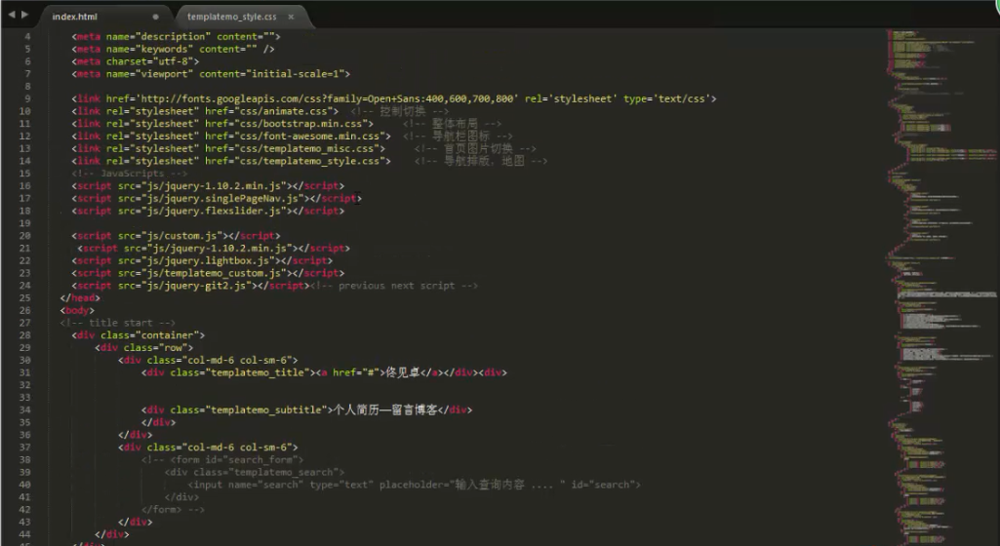

点击图片观看完整制作视频

如何制作个人主页
小学期如约而至，我选到一门锻炼能力的课程————移动互联网课程设计，也就是编写网站，这样一门之前完全没有接触过的课程，在老师介绍之后任务就到了我们自己的身上。首先，我开始投入到HTML5和CSS语言的学习中，在这个看视频学习的过程中，我一边掌握基础知识一边下载所需要搭建的环境，完善我的硬件条件，但是由于之前完全没有接触过，在布局的过程中还是很浪费精力的，我在网上观看了其中一些模板之后，决定在这些已有的模板的基础上加上之前学了三天积累下来的知识，组合成一套新的专属于我自己的个人网站，其中包含了我的个人简历，我的个人主页，我的博客、相册，还有联系反馈等等。在制作的过程中我遇到了许多问题，其中包括大的矛盾类似于排版的方式、实现图片轮放，小的问题也出现许多其中包括关联font-awesome文件来插入图标、图标的动画显示、插入视频格式以及视频的编解码方式等等，在最终我的测试主页完成之后，虽然还不是很成熟，但是还是很有成就感。
第二步是部署我的网页，老师给了教学视频讲的是用JAVA1.7来实现部署，但是由于时间紧张，再加上之前JAVA语言的了解的并不是很多，所以这个任务完成起来相当困难，但是在同学的帮助下，我发现新浪sac上用PHP语言部署可以相当简单的用git完成，但在部署的过程中，我也遇到了一些小问题，比如说部署成功但是没有找到关联的相应的.html文件，解决完了之后又发现点开之后出现了404 的问题，最终发现commit的时候语句有一些小问题，正好借此机会多接触一下git语句，为之后的代码共享等等操作打好基础。最后成功完成了部署的操作。
希望在这个假期我可以深入的去学习HTML5语言，在与之前接触过的c++、硬件语言相比，我觉得我自己更对于这个网站的语言感兴趣，觉得是一种实际的比较好的并且可读性强的一种应用语言。所以趁着这个假期修整的这段日子里，我希望可以比较系统的在网上学习这门课程，并且亲自动手操作几个实例，将自己的兴趣更好地发挥。
-->